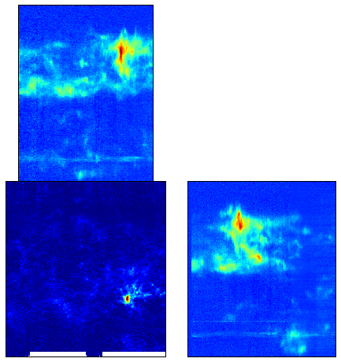
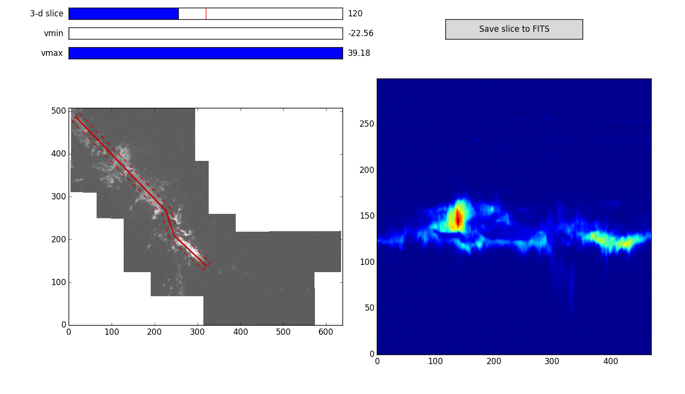

Software Tools for Radio Astronomy
The radio-astro-tools organization hosts a number of community-developed
codes pertinent to the analysis of long-wavelength astronomical data in the
radio, millimeter, and far-infrared regime.
Tools:
Spectral Cube:
A toolkit for reading, writing, masking, and otherwise manipulating
the spectral cubes that are typical products of radio
interferometers and single-dish OTF maps.

PV Extractor:
A toolkit for the extraction of position-velocity diagrams from
data cubes. Includes a matplotlib-based interactive GUI and an
interface to the ds9 FITS viewer.

Signal Identification:
A toolkit for signal identification and extraction from data cubes.
Radio Beam:
A small tool for manipulating radio beams, e.g. synthetic beams from interferometers
and primary beams from single-dishes, in the context of the astropy units framework.
CASA Python:
A wrapper script to allow you to use CASA's python interpreter with
other packages and independent from the CASA data reduction environment.
Contributed Scripts:
A depository for community-contributed scripts that are not necessarily vetted
or well-tested but may be useful to others
Learning:
There is a suite of tutorials
available to demonstrate how to use radio-astro-tools with CASA and for
various types of data set.
If you'd like to contribute, there's a
sandbox that
you can put test code in and use for learning git and github.
About:
TODO: Implement "about"